Overview
A feature allowing users to identify and connect with other users through experiences.
Roles
User Experience & User Interface Designer
Timeline
February 2020 - May 2020
A feature allowing users to identify and connect with other users through experiences.
User Experience & User Interface Designer
February 2020 - May 2020
With no more than 280 characters, a tweet has revolutionized the way we communicate by sharing our thoughts as a short and sweet chirp that echoes through the screen of our followers. Twitter has become a casual place with low barriers to bring together making it accessible for anyone to feel comfortable and start a conversation. However, many of the family members and friends we follow share different interests. For more people, this creates a content overload, in which folks are constantly bombarded with content to which they don’t necessarily relate.
There's not a way to filter content effectively, nor is there a straightforward process to find users with similar interest as your own.
To better understand the users’ needs in terms of content and socializing, I interview current Twitter users from different backgrounds. I made it a goal to identify the key pain point at which users fail to find Tweets they identify with.
My objective was to recognize the key pain points associated with users searching for content and other individuals. Based on my objective, I want to identify:
After the interviews, I realized that users tend to connect more with strangers on Twitter than other platforms. This is due to Twitter’s ‘chill vibe’ and how ‘unfiltered’ users tend to be. This has allowed users to go see what’s happening. Users enjoy coming across tweets they can ‘relate’ to and are able to connect with. However, users rarely encounter themselves with this type of tweet because their home timeline is filled with tweets about subjects they’re not interested in. The tweets they see are often repetitive of the likes, comments, and retweets from the users they follow. Consequently, users tend to follow even more strangers who post about more relatable content. Most twitter users, however, don’t encounter these types of accounts often.
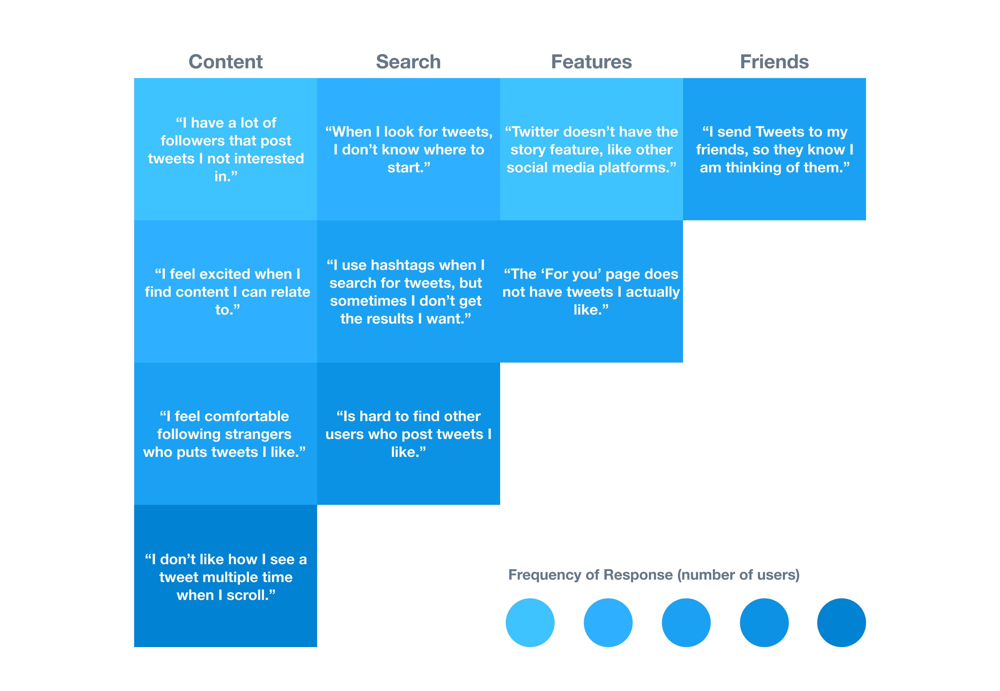After analyzing users' statistics, I found that the problem was with users' lack of frequent encounters with tweets with which they identified.
People want to find relatable content, so they can enjoy their experience, buy they can't do these well because:
I recruited my friends Ling Cao and Alejandra Paulino to brainstorm potential solutions. After going through many sticky notes, we identify 3 main areas of improvement:
After considering these areas of improvement, we came up with three potential solutions to solve the people’s problem.
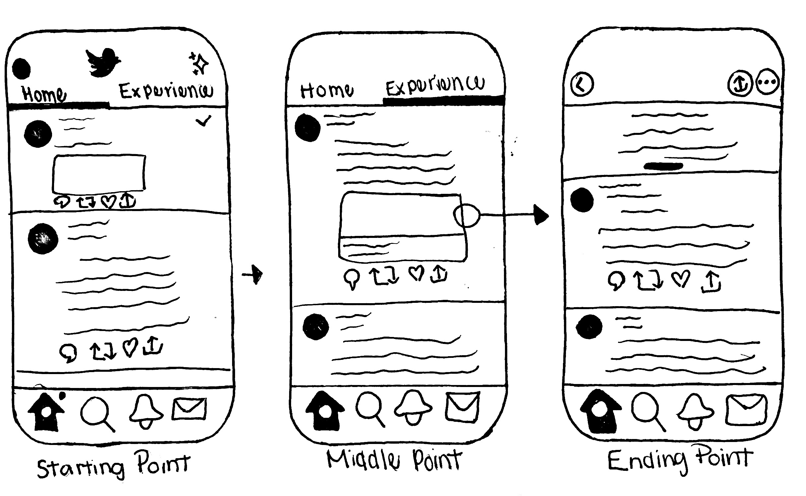Experience Page — A second home page called ‘Experience,’ where users would find different types of experiences shared by virtually anyone on the platform. This feature allows users to become exposed to new users with little to no effort.
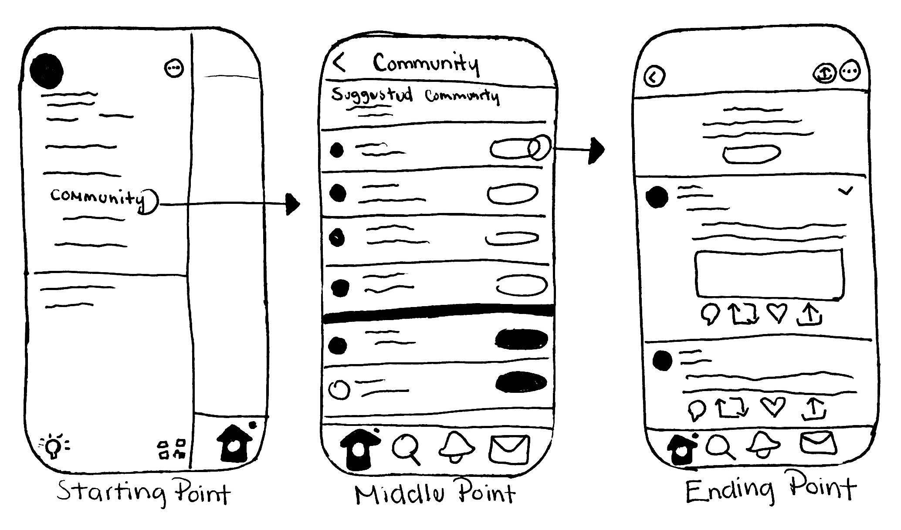Communities — Create communities based on users’ demographics, hobbies, and interests. Users would be able to meet new individuals with similar interests. This feature is overused by other social networks and doesn’t fit best with the branding of Twitter.
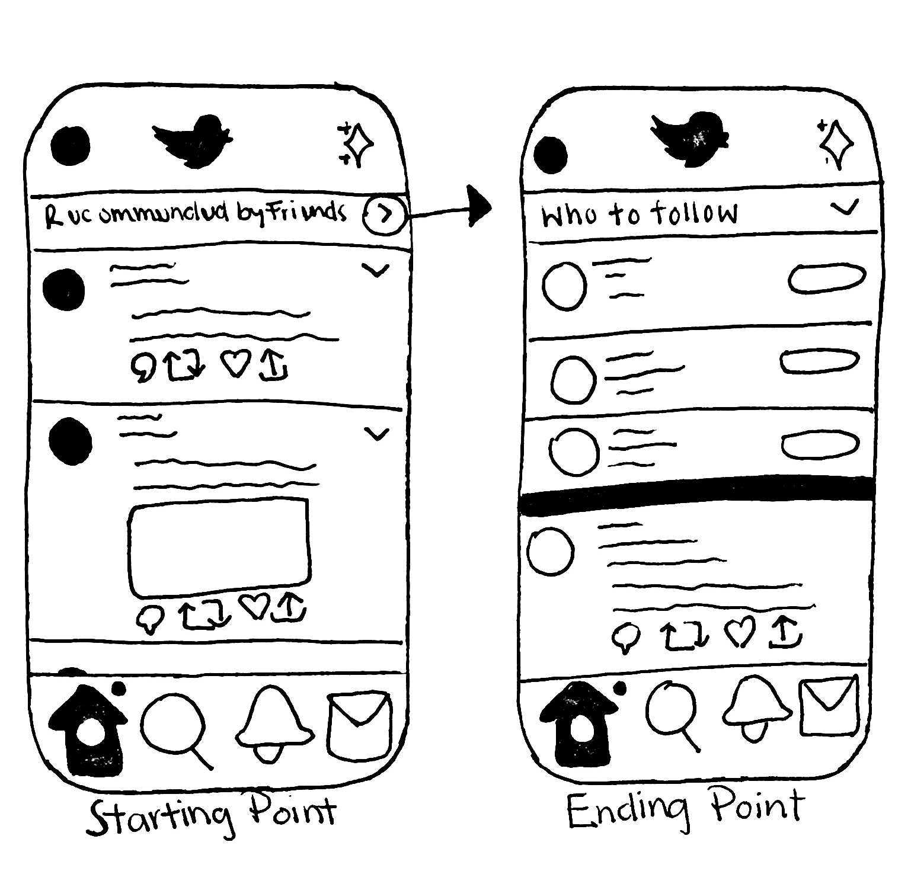Friend’s Recommendation — Users will receive from their followers’ tweets or profiles they think they might want to follow. Not only does this help build relationships between close friends, but a higher chance of content being relatable to the user. The barrier in this solution is that in order to succeed it requires effort from followers.
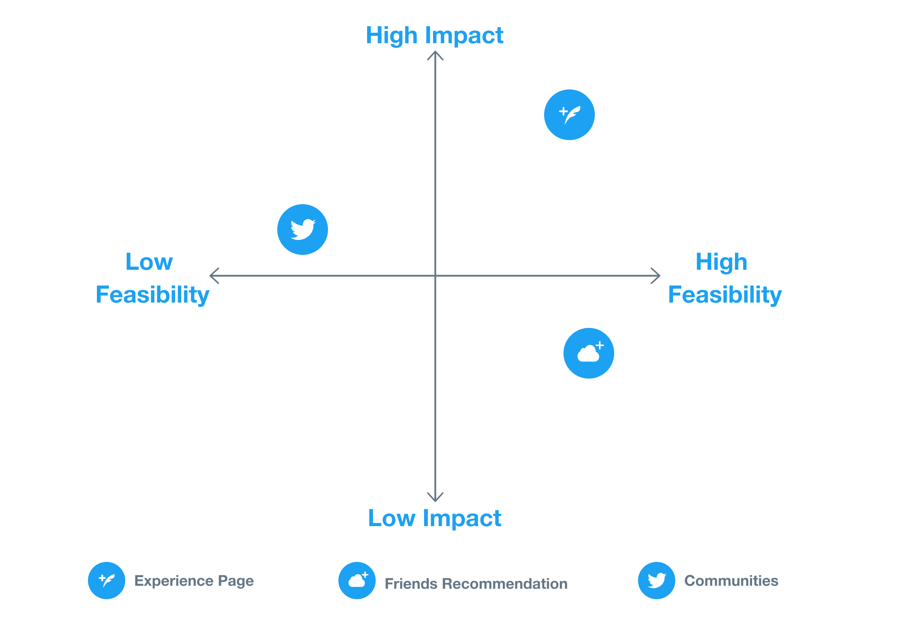After evaluating, I decided to move forward with the Experience Page feature because it seemed the most feasible and had the greatest impact. With this feature, users are able to reflect on their experiences and connect over with other users because of them. Moving forward, I had to make sure the design of the feature organizes experiences best to the users’ interest and increases engagement between users.
After evaluating how the Experience Page feature addresses the problem and its area of improvement, I layout a design journey to generalize an idea of how to feature was going to work. To understand the user flow, I created a list of flow requirements: Second home timeline, Saved experiences, Categories with different experiences, Experience Page, and Creating Experiences. Additionally, to illustrate the feature in relation to the app as a whole, I began to map out the information hierarchy.
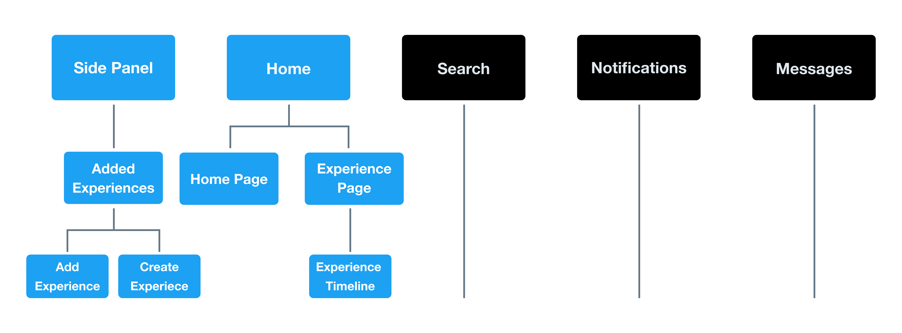During the mid-fidelity iterations, I focused on exploring the entry point, experience timeline, and experience page.
The entry point for the Experience Timeline would be from the ‘Home Page.’ The entry point being at the front, would allow users to reach the entry location almost effortlessly. The visual component would help create familiarity with the feature.
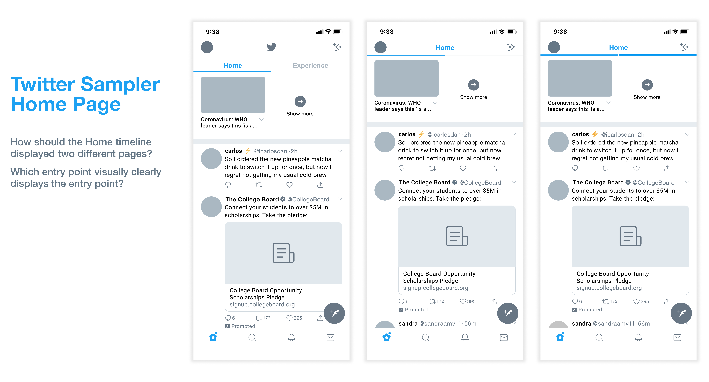Visually, it was easier for users to identify how to reach the Experience Timeline in the first iteration than the other iterations. Several of the users quoted, “The first iterations have the Experience timeline labeled, making it easy to identify that there are two timelines.” Because of this, I decided to move with the first iteration as my entry point.
Since the home page was going to have two different pages, it was important that visually both pages weren’t that different from one another. Additionally, going back to my brainstorming, I wanted to focus on how to best organize the experiences to prevent content overload.
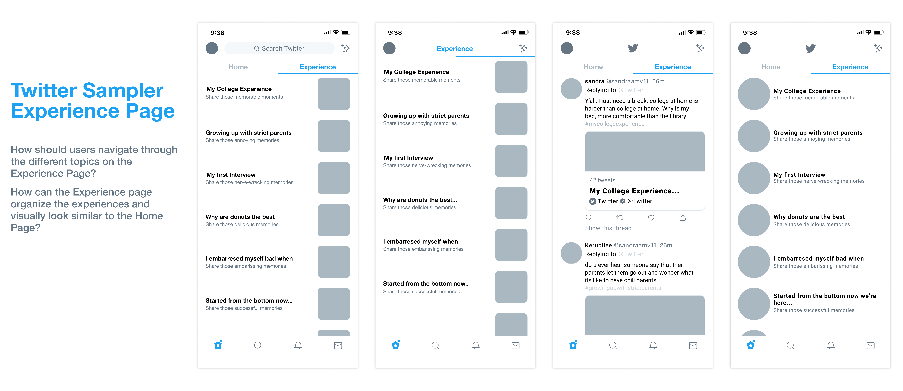I decided to go with the third iteration. Users indicated that the third iteration of the Experience Page flows better with the starting point. Although users felt that the other iterations organize the experience better, for them it felt like just a list of experiences and didn’t motivate them to interact with it.
The focus on the ending point is for users to be able to see all the tweets written for a specific experience. I chose to explore two different types of layout — a thread and a timeline — of the screen. Users would be able to tweet on this page, so it needed to be clear that a tweet can be added through here.
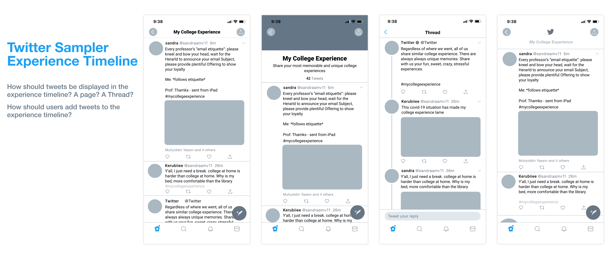The second iteration felt more authentic and balanced to the rest of the feature. The descriptions on top of the page made it clear for users on the purpose of the page.
After my user test feedback, I realized that I had to explore more creative iterations — with a more visually meaningful and simpler interactive flow.
Before creating my final design, I had to make sure the feature’s visual design was consistent with the applications. And throughout this entire process, I asked myself, “Is this something Twitter would visually design?’ I wrote out some design goals, considering my user’s test feedback, which was to:
I created a UI kit as a comprehensive resource to allow me to plan my design’s structure properly. With the assortments on the kit, I was able to dive deeper into the visual treatment of my high-fidelity prototype.
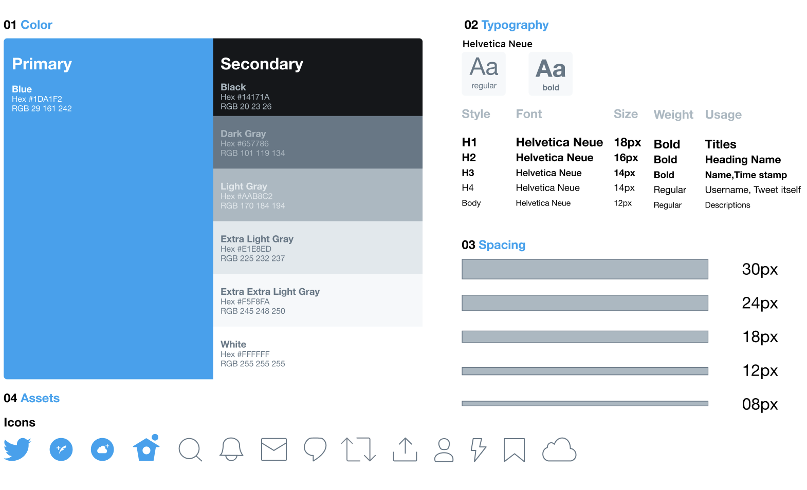After going back and forth with user testing and feedback, this was my final interaction for finding experiences and connecting with new users.
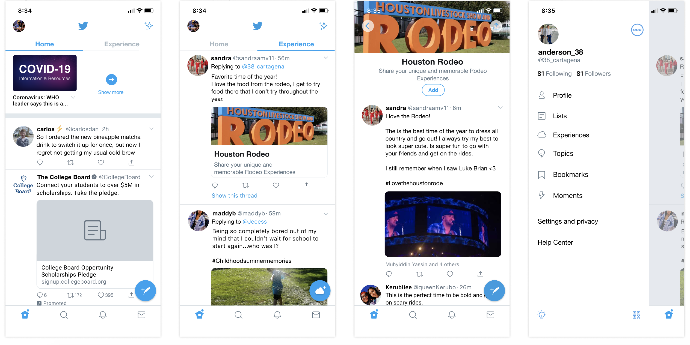 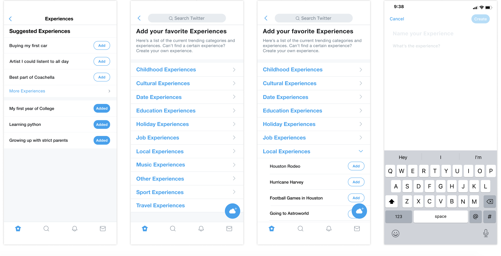